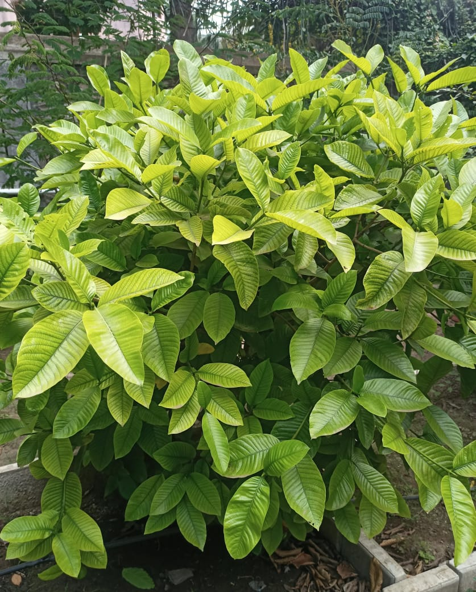

Botanical Name: Gardenia gummifera (L.f.)
Common Name: Dikamali / Indian Gardenia
Family: Rubiaceae
Description: Dikamali is a small shrub with green leaves and fragrant flowers. It produces a yellowish resin called Dikamali.